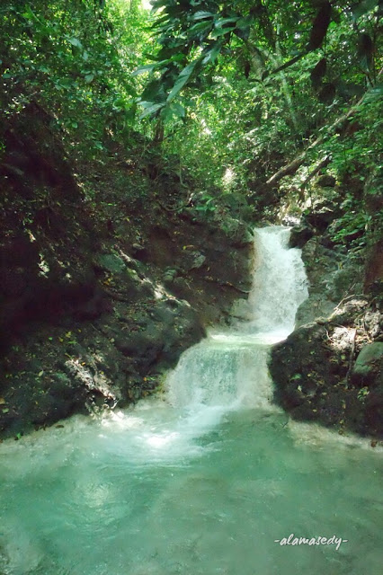

Wisata Gua dan Grojogan Putri Ayu
Wisata Gua dan Grojogan Putri Ayu merupakan wisata alam yang berada di Nganjuk. Wisata ini tersembunyi di balik rimbunnya pohon jati dan dikelola oleh perhutani. Pada laman alamasedy.com disebutkan bahwa pada hari libur di tempat wisata ini banyak pengunjungnya, namun jika pada hari biasa hanya sedikit pengunjung, sehingga disarankan jika kesini pada hari biasa atau bukan hari libur. Ada sekitar lima gua di sini. Namun, hanya pintu dan ruang kecil di dalam gua yang bisa dimasuki. Jika ingin kesini disarankan untuk membawa makanan dan minuman sendiri, karena di grojogan tidak ada penjual sama sekali.
Akses Jalan : Jalannya cukup luas, tapi bergelombang bekas roda truk. Mobil harus parkir agak jauh (sekitar 100 meter) dari loket tiket karena ada sebuah jembatan sempit. Kalau motor bisa diparkir sangat dekat dengan loket tiket. Untuk menuju ke Gua dan Grojogan Putri Ayu membutuhkan jalan kaki sekitar 200 meter.
Harga Tiket : Rp 5.000 / Orang
Jam operasional : Setiap hari, Pukul 08:00 – 17:00 WIB
Maps : https://maps.app.goo.gl/CyAbqLzcKLPoQkBg8
Media Sosial / Kontak yang dapat di hubungi : -